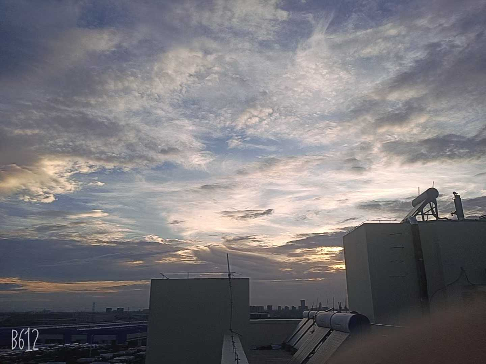
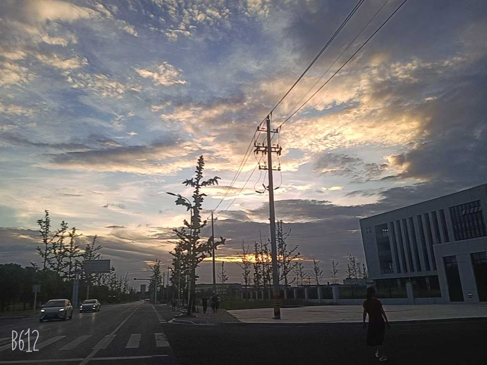
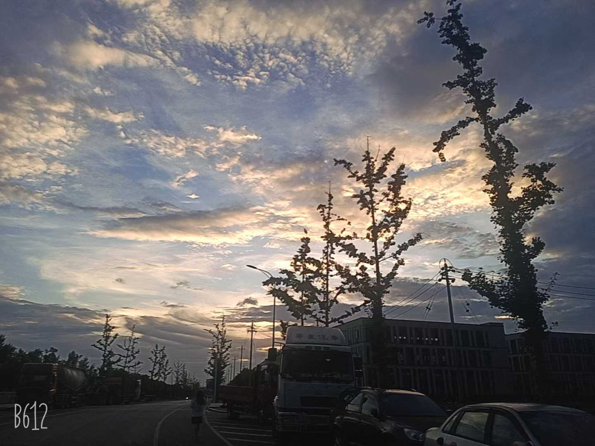
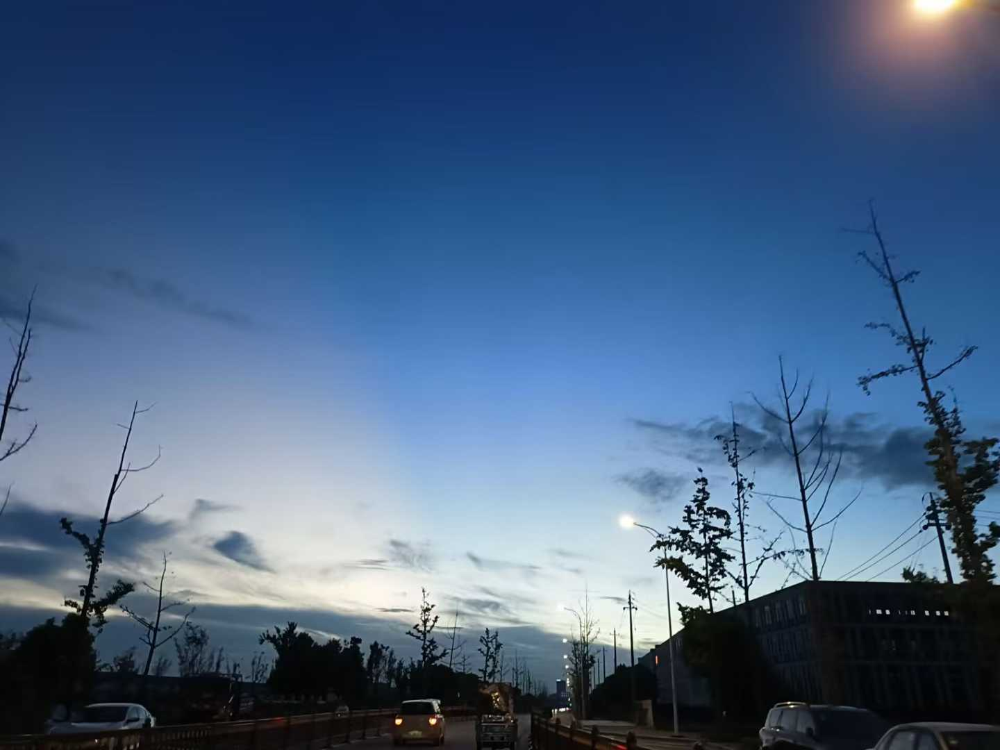
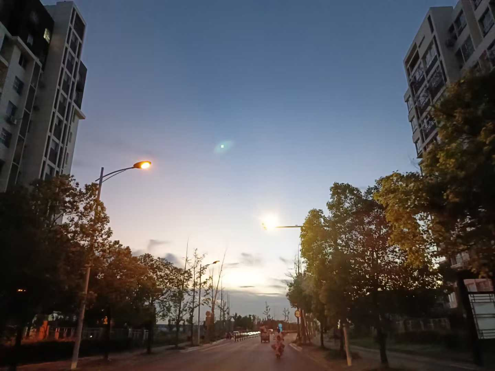

CXY ♥
关于我
性别：女生
兴趣：拍照记录生活
生日：2011年7月21日
性格：敏感但坚强
我的摄影作品
我喜欢用相机记录生活中的美好瞬间，虽然生活有时很艰难，但镜头下的世界总是充满希望。





我的历程
小学时期
不知道开心是什么感觉，做什么都是错的，有一个不幸福的原生家庭。
初中时期
被同学们造谣，经历了很多不愉快的时光，但学会了用相机记录生活。
现在
仍在寻找真正的快乐，但通过摄影找到了一丝慰藉和表达自我的方式。
联系我
如果你愿意和我做朋友，或者想分享摄影心得，可以通过以下方式联系我：
微信：CXYAIL20100927
QQ：3686730349